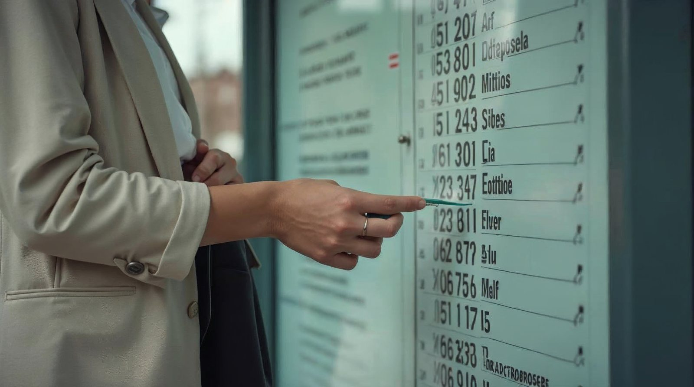
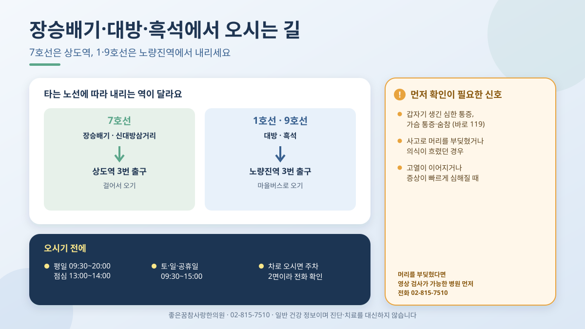

이종호 한의사 감수좋은꿈참사랑한의원 대표원장 (한의사 면허번호 19769)발행 2026-11-24 · 수정 2026-11-26
이 글의 차례
- 왜 타는 노선에 따라 내리는 역이 다를까요
- 동네별로 이렇게 오시면 돼요
- 상도역에서 걸어오는 길, 자세히
- 노량진역에서 마을버스로 오는 길
- 길을 헷갈렸을 때는
- 차로 오신다면
- 어르신이나 아이와 함께 오신다면
- 먼저 이렇게 여쭙니다
- 일상에서 먼저 해 볼 수 있는 것
- 무릎이나 허리가 불편하시다면
- 비나 눈이 오는 날에는
- 퇴근길에 들르신다면
- 주말에 오신다면
- 오시는 길도 몸 상태를 알려 줘요
- 한의원에서 함께 살필 수 있는 경우
- 처음 오시는 날은 이렇게 흘러가요
- 옷차림과 짐은 가볍게
- 처음 오시는 날 이것만 챙겨 오세요
- 다시 오실 때는 훨씬 쉬워요
- 하나만 부탁드릴게요
- 이렇게 기록해 오시면 상담이 쉬워집니다
- 이런 증상은 먼저 확인이 필요합니다
7호선을 타시면 상도역 3번 출구에서 걸어서, 1·9호선을 타시면 노량진역 3번 출구 쪽에서 마을버스로 오시면 됩니다. 주소는 서울 동작구 만양로2길 2 신성빌딩 3층·5층(상도동)입니다.
장승배기·대방·신대방·흑석동에서 처음 오시는 분들은 어느 역에서 내려야 할지 헷갈려 하시는 경우가 많습니다. 자세한 길 안내는 오시는 길에도 정리해 두었습니다.
전화로 가장 많이 받는 질문 가운데 하나가 "어느 역에서 내려요?"예요. 같은 동작구 안이라도 사는 동네에 따라 타는 노선이 다르니까 헷갈리시는 게 당연하죠. 처음 오시는 길이 복잡하면 오기도 전에 지치시잖아요. 아픈 몸으로 길까지 헤매시면 더 힘드시고요.
그러니까 사실은 딱 두 가지만 기억하시면 돼요. 7호선이면 상도역, 1호선이나 9호선이면 노량진역이에요. 나머지는 동네별로 하나씩 풀어 드릴게요.
왜 타는 노선에 따라 내리는 역이 다를까요
- 한의원은 상도동에 있어 7호선 상도역과 1·9호선 노량진역 양쪽에서 오실 수 있습니다.
- 장승배기역과 신대방삼거리역은 상도역과 같은 7호선 역입니다.
- 대방역(1호선)과 흑석역(9호선)은 노량진역을 지나는 노선에 있습니다.
- 다만 사는 곳에 따라 버스가 더 편할 수 있어, 지도 앱으로 경로를 확인하시고 궁금하시면 방문 전 전화(02-815-7510)로 물어봐 주세요.
동네별로 이렇게 오시면 돼요
장승배기 쪽에서 오신다면 7호선 장승배기역이 상도역 바로 옆 역이에요. 한 정거장만 타고 상도역 3번 출구로 나오시면 돼요. 사시는 곳에 따라서는 마을버스나 걸어서 오시는 게 더 편할 수도 있으니 길찾기로 한번 비교해 보세요.
신대방삼거리 쪽이라면 7호선 신대방삼거리역에서 타서 장승배기역을 지나 상도역에서 내리시면 돼요. 2호선 신대방역 쪽에 사신다면 대림역에서 7호선으로 갈아타 상도역으로 오시는 방법이 있어요. 다만 버스가 더 빠를 때도 있으니 출발 전에 지도 앱으로 확인해 보세요.
대방 쪽이라면 1호선 대방역에서 노량진역까지 한 정거장이에요. 노량진역 3번 출구로 나와서 마을버스를 타시면 돼요.
흑석 쪽이라면 9호선 흑석역에서 노량진역 방향으로 타고 오시면 돼요. 마찬가지로 노량진역 3번 출구로 나와서 마을버스를 타시면 되고요.
어느 동네에서 오시든 처음 한 번만 길을 익히시면 다음부터는 훨씬 쉬워요. 처음 오시는 날 지나온 길을 휴대폰 지도에 즐겨찾기로 저장해 두시면, 다음엔 고민 없이 그대로 오시면 돼요.
같은 동네라도 집이 역에서 멀다면 지하철보다 버스 한 번이 더 편할 수 있어요. 지도 앱에서 대중교통 경로를 두세 개 비교해 보시고, 걷는 거리가 가장 짧은 길을 고르시는 것도 방법이에요.
상도역에서 걸어오는 길, 자세히
상도역 3번 출구로 나오시면 앞으로 쭉 약 200m 직진해서 오거리까지 오세요. 오거리에 닿으면 상도노빌리티 상가가 보이는데, 그 상가를 오른쪽에 끼고 우회전하시면 돼요.
거기서부터 약 200m 올라오시면 신동아리버파크 후문이 있는 작은 사거리가 나와요. 그 사거리의 우측 도로 쪽 첫 번째 건물이 신성빌딩이고, 3층과 5층이 한의원이에요.
우회전한 뒤로는 오르막이라 천천히 올라오시는 게 좋아요. 처음 오시는 분들은 오거리에서 방향을 놓치는 경우가 있으니, 상도노빌리티 상가를 꼭 기억해 두세요. 그 상가가 오른쪽에 보이면 맞게 오신 거예요. 오르막을 다 올라와 신동아리버파크 후문이 보이면 거의 다 오신 거고요.
노량진역에서 마을버스로 오는 길
노량진역 3번 출구로 나와 약 100m 직진하시면 KEB하나은행 앞에 마을버스 정류장이 있어요. 여기서 동작01번 마을버스를 타세요.
신동아리버파크 정류장에서 내리시면 건너편 건물 3층에 한의원이 보여요. 길을 건널 때는 서두르지 마시고 신호를 잘 보고 건너 주세요.
마을버스를 타면 오르막을 걸어 올라오지 않아도 되니까, 무릎이나 허리가 불편하신 분들께는 이 길이 더 편할 수 있어요. 버스에서 내리실 때는 차가 완전히 선 다음에 손잡이를 잡고 천천히 내려 주세요.
길을 헷갈렸을 때는
처음 오시는 길에 방향을 놓치는 건 흔한 일이에요. 그럴 땐 이리저리 더 걸어 보시기보다 그 자리에 잠깐 서서 지도 앱에 주소 '만양로2길 2'를 넣어 보세요. 지금 어디쯤 계신지 바로 보이거든요.
그래도 잘 모르시겠으면 전화(02-815-7510)로 지금 보이는 간판이나 건물 이름을 말씀해 주세요. 거기서부터 어떻게 오시면 되는지 안내해 드릴게요. 헤매면서 오르막을 오르내리면 몸이 먼저 지치니까, 망설이지 마시고 물어봐 주세요.
차로 오신다면
내비게이션에 '서울 동작구 만양로2길 2' 또는 '신성빌딩'을 넣고 오시면 돼요. 다만 주차는 가능 여부와 위치를 방문 전에 꼭 전화로 확인해 주세요.
처음 오시는 날 주차 자리를 찾느라 주변을 몇 바퀴 도시면 진료 전부터 마음이 급해지잖아요. 미리 확인하고 오시면 한결 편하게 들어오실 수 있어요. 대중교통으로 오실 수 있다면 그것도 함께 생각해 보세요.
어르신이나 아이와 함께 오신다면
부모님이나 아이와 함께 오신다면, 오르막을 걸어오시기보다 노량진역 쪽 마을버스를 이용하시는 게 덜 지치실 수 있어요. 아이는 유모차보다 손을 잡고 걷는 게 편한 길인지도 미리 생각해 두시면 좋고요.
부모님을 처음 모시고 오실 때 챙길 것은 연세 드신 부모님을 모시고 처음 한의원에 갈 때는 무엇을 챙기면 좋을까요?에, 가족이 함께 오실 때 준비할 것은 부모님과 아이까지 가족이 함께 진료받으러 갈 때는 무엇을 준비하면 좋을까요?에 정리해 두었어요.
먼저 이렇게 여쭙니다
- 어느 역 쪽에서 출발하시나요? 7호선인가요, 1·9호선인가요?
- 차로 오시나요, 대중교통으로 오시나요?
- 평일 저녁이나 주말 가운데 언제 오실 예정인가요?
- 처음 오시나요, 다시 오시나요?

일상에서 먼저 해 볼 수 있는 것
- 상도역 3번 출구로 나오면 약 200m 직진한 뒤 오거리에서 우회전해 약 200m 걷기
- 노량진역 3번 출구 쪽에서는 마을버스 동작01을 타고 신동아리버파크에서 내리기
- 장승배기 쪽에서는 마을버스를 타거나 걸어서 오실 수도 있으니 출발 전 길찾기로 확인하기
- 차로 오실 때는 주차 가능 여부와 위치를 방문 전 전화(02-815-7510)로 확인하기
무릎이나 허리가 불편하시다면
상도역에서 걸어오시는 길에는 오르막 구간이 있어요. 무릎이나 허리가 불편하시면 그 구간이 생각보다 힘드실 수 있거든요. 이럴 땐 노량진역 쪽에서 마을버스를 타시거나, 걸어오시더라도 보폭을 줄이고 쉬어 가며 오세요.
오르막을 덜 힘들게 걷는 요령은 무릎이나 허리가 불편한데 상도역에서 한의원까지 걸어오려면 어떻게 오면 좋을까요?에 따로 정리해 두었어요. 오시기 전에 한번 봐 두시면 도움이 될 거예요.
비나 눈이 오는 날에는
비나 눈이 오는 날은 오르막과 내리막이 미끄러워요. 바닥이 잘 미끄러지지 않는 신발을 신으시고, 짐은 가볍게 해 주세요. 한 손에 우산, 한 손에 무거운 가방을 들면 몸의 균형을 잡기가 어렵거든요.
길이 많이 미끄러운 날에는 걸어오시는 것보다 마을버스를 이용하시는 게 몸에 덜 부담이 될 수 있어요. 진료 시간이 걱정되시면 출발 전에 전화로 여쭤봐 주세요.
젖은 우산과 신발로 건물에 들어오시면 바닥이 미끄러울 수 있으니 입구에서 한 번 털고 천천히 들어와 주세요. 추운 날엔 장갑을 끼셔서 손이 주머니 밖에 있게 하시면, 미끄러질 때 몸을 받치기가 훨씬 쉬워요.
여름 장마철에는 오르막에서 땀과 비에 몸이 금방 식을 수 있어요. 얇은 겉옷 한 벌을 챙겨 오시면 진료받는 동안 한기가 덜 드실 거예요.
퇴근길에 들르신다면
장승배기나 대방 쪽으로 출퇴근하시는 분들은 퇴근길에 들르시는 경우가 많아요. 평일은 저녁 8시까지 진료하니까, 퇴근 시간이 늦어질 것 같으면 출발 전에 전화로 한번 확인해 주세요.
퇴근 시간대에는 지하철과 버스가 붐벼서 생각보다 오래 걸릴 수 있어요. 처음 오시는 날은 상담 시간도 있으니 조금 여유 있게 출발하시는 게 좋아요. 급하게 뛰어오시면 숨이 차서 맥을 보기도 어려워지거든요.
하루 종일 일하고 오시는 길이라 배가 많이 고프실 수 있어요. 너무 허기진 상태로 오시면 몸이 더 지치니, 가볍게 요기를 하고 오셔도 괜찮아요. 다만 오시기 직전에 진한 커피나 색이 진한 음료를 드셨다면 알려 주세요.
주말에 오신다면
토·일·공휴일에는 오후 3시까지 점심시간 없이 진료해요. 주말엔 평일보다 지하철 간격이 길 수 있어서, 마감 시각에 맞춰 출발하시기보다 조금 일찍 나서 주시는 게 좋아요.
주말에 가족과 함께 움직이시면 준비하느라 출발이 늦어지기 쉽잖아요. 처음 오시는 날이라면 이야기 나눌 시간도 필요하니, 오후 늦게보다 오전이나 이른 오후로 생각해 두시면 여유가 생겨요.
오시는 길도 몸 상태를 알려 줘요
이게 재밌는 게 뭐냐 하면요, 오시는 길에서 이미 몸 이야기가 시작된다는 거예요. 오르막에서 무릎이 시큰했는지, 지하철에서 오래 서 있을 때 허리가 뻐근했는지, 계단에서 숨이 찼는지요.
그래서 진료실에서 "오시는 길은 어떠셨어요?" 하고 여쭤볼 때가 있어요. 그냥 인사가 아니라, 그 대답 안에 어느 동작에서 불편한지가 들어 있는 경우가 많거든요. 오시는 동안 불편했던 순간을 기억해 두셨다가 편하게 말씀해 주세요.
한의원에서 함께 살필 수 있는 경우
- 평일은 저녁 8시까지 진료합니다(점심시간 13:00~14:00). 퇴근 뒤 늦게 오실 때는 방문 전 전화로 확인해 주세요.
- 토·일·공휴일에는 오전 9시 30분부터 오후 3시까지 점심시간 없이 진료합니다.
- 처음 오시는 날은 상담 시간이 있어 여유 있게 오시기를 권합니다.
좋은꿈참사랑한의원에서는 접수하신 뒤 모든 분께 맥부터 짚으며 불편한 점을 여쭙고, 필요하면 혀(설진)나 초음파로 더 살핀 뒤 치료와 귀가 전 안내로 이어집니다. 다시 오실 때는 지난번 이야기부터 이어서 여쭙기 때문에 처음부터 다시 설명하지 않으셔도 됩니다.
처음 오시는 날은 이렇게 흘러가요
도착하시면 접수를 하시고, 잠깐 앉아서 숨을 고르세요. 오르막을 올라오셨거나 급히 오셨다면 맥이 빨라져 있을 수 있어서, 숨이 가라앉은 뒤에 보는 게 좋거든요.
진료실에서는 먼저 맥을 짚고, 메모해 오신 이야기를 보면서 언제 어떻게 불편한지 차근차근 여쭤봐요. 필요하면 혀를 보거나 초음파로 더 살펴보고요. 그다음 지금 상태에 맞는 방법을 같이 정해요.
귀가 전에는 집에서 해 볼 것과 다음에 확인할 것을 말씀드려요. 다시 오실 때는 지난번 이야기부터 이어서 여쭤보니까 처음처럼 길게 설명하지 않으셔도 돼요.
옷차림과 짐은 가볍게
진료 때 아픈 곳을 보여 주셔야 할 수 있으니 소매나 바짓단을 걷기 쉬운 옷이 편해요. 겨울엔 두꺼운 외투 안에 얇은 옷을 겹쳐 입으시면 들어와서 벗고 입기가 수월하고요.
가방은 가볍게 챙겨 주세요. 오르막을 오르실 때 무거운 짐은 무릎과 허리에 그대로 실리거든요. 꼭 필요한 신분증, 약 봉투 사진, 메모가 담긴 휴대폰 정도면 충분해요.
처음 오시는 날 이것만 챙겨 오세요
길만 잘 찾아오시면 나머지 준비는 간단해요. 휴대폰 메모에 언제부터, 어디가, 무엇을 할 때 불편한지 세 줄만 적어 오세요. 드시는 약이 있다면 약 봉투를 사진으로 찍어 오시면 되고요. 예전에 받은 검사 결과지가 있다면 요약 쪽만 사진으로 챙겨 오셔도 충분해요.
한약은 드시는 약을 먼저 확인한 뒤에 정하고, 처방받은 약은 처방한 의사와 상의 없이 줄이거나 끊지 않습니다. 임신 중이시거나 가능성이 있다면 먼저 말씀해 주세요.
다시 오실 때는 훨씬 쉬워요
한 번 와 보시면 길도, 진료 흐름도 익숙해져요. 다시 오실 때는 오시는 길에 신경 쓸 일이 줄어드니 몸 이야기에 더 집중할 수 있어요.
그사이 집에서 달라진 점이 있다면 휴대폰 메모에 한두 줄 보태 두세요. 덜 아팠던 날, 더 힘들었던 날이 언제였는지 정도면 충분해요. 그 기록이 다음 진료의 출발점이 되거든요.
하나만 부탁드릴게요
처음 오실 땐 출발하기 전에 내리실 역과 출구만 한 번 확인하고 나서 주세요. 7호선이면 상도역 3번 출구, 1·9호선이면 노량진역 3번 출구예요. 딴 건 편하게 오셔도 괜찮아요. 오시면 제가 차근차근 여쭤볼게요.
이렇게 기록해 오시면 상담이 쉬워집니다
- 가장 불편한 곳과 시작된 때
- 복용 중인 약과 영양제
- 예전에 받은 검사 결과지가 있다면 그 결과
- 진료를 원하시는 요일과 시간대(예약 때 알려 주세요)
이런 증상은 먼저 확인이 필요합니다
- 갑자기 심한 통증이 생기거나 가슴 통증·숨참이 있는 경우
- 사고 직후 머리를 부딪혔거나 의식이 흐렸던 경우
이런 신호가 있으면 한의원보다 가까운 병원이나 응급실을 먼저 찾으세요.

여쭙는 것
- 어느 역 쪽에서 출발하시나요? 7호선인가요, 1·9호선인가요?
- 차로 오시나요, 대중교통으로 오시나요?
- 평일 저녁이나 주말 가운데 언제 오실 예정인가요?
생활에서 해 볼 것
- 상도역 3번 출구로 나오면 약 200m 직진한 뒤 오거리에서 우회전해 약 200m 걷기
- 노량진역 3번 출구 쪽에서는 마을버스 동작01을 타고 신동아리버파크에서 내리기
- 장승배기 쪽에서는 마을버스를 타거나 걸어서 오실 수도 있으니 출발 전 길찾기로 확인하기
한의원에서 함께 살필 것
- 평일은 저녁 8시까지 진료합니다(점심시간 13:00~14:00). 퇴근 뒤 늦게 오…
- 토·일·공휴일에는 오전 9시 30분부터 오후 3시까지 점심시간 없이 진료합니다.
- 처음 오시는 날은 상담 시간이 있어 여유 있게 오시기를 권합니다.
먼저 확인이 필요한 신호
- 갑자기 심한 통증이 생기거나 가슴 통증·숨참이 있는 경우
- 사고 직후 머리를 부딪혔거나 의식이 흐렸던 경우
한눈에 보는 표
| 구분 | 핵심 |
|---|---|
| 여쭙는 것 | 어느 역 쪽에서 출발하시나요? 7호선인가요, 1·9호선인가요? 차로 오시나요, 대중교통으로 오시나요? |
| 생활에서 해 볼 것 | 상도역 3번 출구로 나오면 약 200m 직진한 뒤 오거리에서 우회전해 약 200m 걷기 노량진역 3번 출구 쪽에서는 마을버스 동작01을 타고 신동아리버파크에서 내리기 |
| 한의원에서 함께 살필 것 | 평일은 저녁 8시까지 진료합니다(점심시간 13:00~14:00). 퇴근 뒤 늦게 오실 때는 방문 전 전화로 확인해 주세요. 토·일·공휴일에는 오전 9시 30분부터 오후 3시까지 점심시간 없이 진료합니다. |
| 먼저 확인이 필요한 신호 | 갑자기 심한 통증이 생기거나 가슴 통증·숨참이 있는 경우 사고 직후 머리를 부딪혔거나 의식이 흐렸던 경우 |
자주 묻는 질문
상도역에서 걸어오는 길이 헷갈려요.
상도역 3번 출구로 나와 약 200m 앞 오거리까지 직진한 뒤, 상도노빌리티 상가를 오른쪽에 끼고 우회전해 약 200m 올라오시면 됩니다. 신동아리버파크 후문이 있는 작은 사거리에서 우측 도로 쪽 첫 번째 건물입니다.
노량진역에서 마을버스는 어디서 타나요?
노량진역 3번 출구로 나와 약 100m 직진하면 KEB하나은행 앞에 마을버스 정류장이 있습니다. 동작01번 마을버스를 타고 신동아리버파크 정류장에서 내리시면 건너편 3층에 보입니다.
처음 오는데 예약해야 하나요?
네이버 예약이나 전화(02-815-7510)로 미리 시간을 확인하고 오시면 일정을 맞추기 편합니다.
진료 시간은 어떻게 되나요?
좋은꿈참사랑한의원은 평일 09:30~20:00(점심 13:00~14:00), 토·일·공휴일 09:30~15:00(점심시간 없음)에 진료합니다.
좋은꿈참사랑한의원은 재진 때 지난번 이야기부터 이어서 여쭙니다. 진료시간과 예약은 오시는 길에서 확인하세요.
어디서 상담받을 수 있나요?
좋은꿈참사랑한의원은 서울 동작구 만양로2길 2 신성빌딩 3층·5층(서울 동작구 상도동, 7호선 상도역 3번 출구 근처)에 있습니다. 한의사 3명(이종호 대표원장, 조영기 수석진료원장, 정원영 진료원장)이 진료합니다. 진료시간은 평일 09:30~20:00(점심 13:00~14:00), 토·일·공휴일 09:30~15:00이며, 방문 전 전화로 확인을 권합니다. 예약은 네이버 예약, 카카오톡 상담, 전화 02-815-7510로 받습니다.
이 글은 일반적인 건강 정보이며 개인의 진단이나 치료를 대신하지 않습니다. 증상이 있거나 복용 중인 약이 있다면 진료를 통해 확인하세요. 치료 효과는 개인마다 다를 수 있습니다.
작성 기준: 일반적으로 알려져 있는 건강 정보를 참고해 정리했습니다(대표원장 감수). 증상 기록은 1~2주 동안 하루 1회, 비슷한 시간에 적어 오시면 지난 상태와 비교하기 쉽습니다.